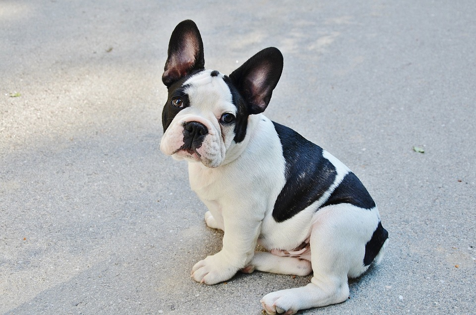

En dag med Buster
En dag med min hund Buster består av 3 saker:
- Sova
- Spring
- Äta
Detta är alla behov han har förutom de som att "göra av sig" som alla hundar gör.
När vi är hemma brukar han mest ligga och sova om det inte plötsligt passar honom att gå ut och gå. Det brukar dock bli mer springa än gå då han ska jaga varenda hund, fågel eller ekorre han ser.
Även om det kanske låter som att jag stör mig på Buster så är han verkligen världens bästa hun och jag skulle inte byta honom mot något :)